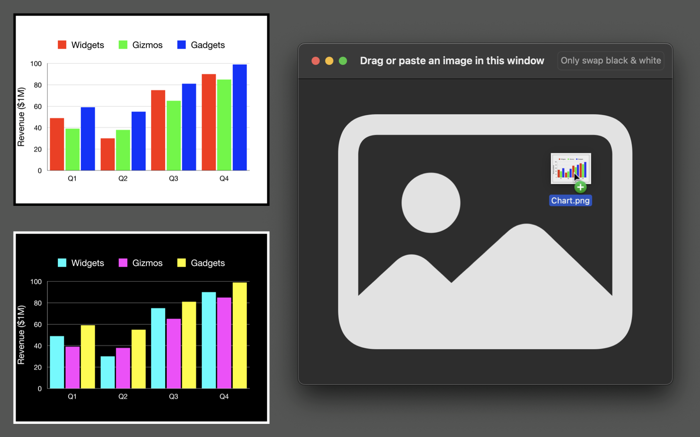

ImageInversion is a macOS app that inverts the colors in an image.
I wrote this little app to help me convert light mode graphics to dark mode on the fly, since I like to use dark backgrounds in my presentations. It also is an easy way to make negative images of photos.
Just drag an image into ImageInversion, then drag the result into another app. Or drag the result onto your desktop to save it as a new PNG image file.
ImageInversion for macOS is now available free of charge under the MIT License.
Download version 1.2. (sha256 checksum: 98a8bb531570241baf93bce6bffe930d6738c7e50c5e029796ef8a6578eb5d61)
To users who purchased the macOS version of ImageInversion, thank you very much for your support. I'm sorry that I'm no longer able to provide the app through the Apple App Store.
As a solo, hobbyist developer, I haven't been able to figure out how to ensure my app complies with new age verification laws, such as the Texas App Store Accountability Act. Apple has released some new APIs meant to assist with this. Even so, I remain unsure what I would have to do to comply with such laws, and I'm concerned about the legal risk these laws introduce. As a result, I've reluctantly chosen to pull the macOS app from Apple's App Store.
To make sure that everyone who purchased the app continues to have access to it, I have decided to release ImageInversion for free directly from my website.
If you have questions or concerns about this change, please contact help@geoffrey-lovelace.com.
If you have questions or encounter any issues using ImageInversion, or questions about ImageInversion's privacy policy (the Apple App Store requires you to have a privacy policy, even though ImageVersion doesn't collect any personal information at all), please contact me at help@geoffrey-lovelace.com.
